<meta charset="utf-8">
<meta name="viewport" content="width=device-width, initial-scale=1">
<title>{{title}}</title>
<link rel="preconnect" href="https://fonts.googleapis.com">
<link rel="stylesheet" href="https://fonts.googleapis.com/css2?family=Lato:wght@400;700;900&family=IBM+Plex+Mono:wght@400;500&display=swap">
<link rel="stylesheet" href="reference/bruce-page.css">
<!-- tabs -->
<header class="hero">
  <p class="eyebrow">{{platform}} · {{year}} · {{publisher}}</p>
  <h1>{{title}}</h1>
  <p class="sub">Twenty rooms, a screen each. Most of the ways through them are shut until the right lanterns are taken.</p>
</header>
<main class="wrap">
<section id="map">
  <p class="fig">The rooms</p>
  <h2 class="t">All twenty rooms</h2>
  <p class="lede">A room’s exits are screen characters 2 to 5. Each room has a table entry for each kind giving the room it leads to and where Bruce arrives (<code>exit_2_room</code>-<code>exit_5_room</code>, <code>$4B5E</code>-<code>$4BAD</code>; <code>exit_2_x</code>-<code>exit_5_y</code>, <code>$4BFE</code>-<code>$4C9D</code>). An exit that is not on the room’s starting screen is drawn in by the room’s own routine when lanterns are taken (<code>room_frame_table</code>, <code>$4EC4</code>): those are listed as opened by lanterns.</p>
  <p>The pictures were taken in the emulator with Bruce placed in each room. Rooms 0 to 9 draw their scenery from the character set at <code>$A000</code>, rooms 10 to 17 and 19 from <code>$A800</code>, and the Wizard’s room from <code>$B000</code> (<code>$0A9B</code>).</p>
  <div class="rooms">
  <figure class="room" id="room-0">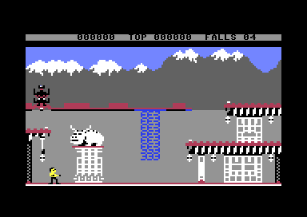
    <h3>Room 0</h3><p>The garden where every game starts, under snow-capped mountains.</p><p>Open from the start to <a href="#room-1">room 1</a>.</p><p class="kv">6 lanterns · the Ninja and Yamo</p></figure>
  <figure class="room" id="room-1">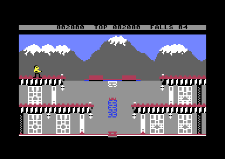
    <h3>Room 1</h3><p>The garden goes on. Its gate opens only when rooms 0, 1, and 2 have no lanterns left.</p><p>Open from the start to <a href="#room-0">room 0</a> and <a href="#room-2">room 2</a>. <span class="later">Opened by lanterns:</span> <a href="#room-5">room 5</a>.</p><p class="kv">6 lanterns · the Ninja and Yamo</p></figure>
  <figure class="room" id="room-2">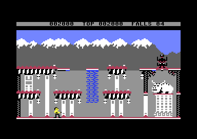
    <h3>Room 2</h3><p>The end of the garden, beside the fortress wall.</p><p>Open from the start to <a href="#room-1">room 1</a>. <span class="later">Opened by lanterns:</span> <a href="#room-3">room 3</a>.</p><p class="kv">10 lanterns · the Ninja and Yamo</p></figure>
  <figure class="room" id="room-3">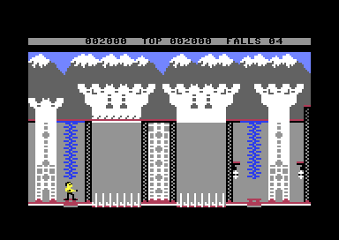
    <h3>Room 3</h3><p>The fortress towers. No enemy comes in here.</p><p>Open from the start to <a href="#room-2">room 2</a>. <span class="later">Opened by lanterns:</span> <a href="#room-0">room 0</a> and <a href="#room-10">room 10</a>.</p><p class="kv">2 lanterns · no enemies</p></figure>
  <figure class="room" id="room-4">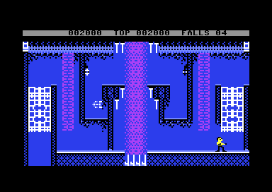
    <h3>Room 4</h3><p>A blue maze of passages, reached only from room 5.</p><p>Open from the start to <a href="#room-5">room 5</a> and <a href="#room-7">room 7</a>.</p><p class="kv">2 lanterns · the Ninja and Yamo</p></figure>
  <figure class="room" id="room-5">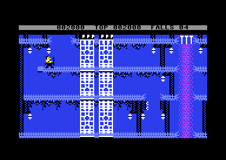
    <h3>Room 5</h3><p>A blue hall of floors and climbing nets.</p><p>Open from the start to <a href="#room-6">room 6</a>. <span class="later">Opened by lanterns:</span> <a href="#room-1">room 1</a> and <a href="#room-4">room 4</a>.</p><p class="kv">10 lanterns · the Ninja and Yamo</p></figure>
  <figure class="room" id="room-6">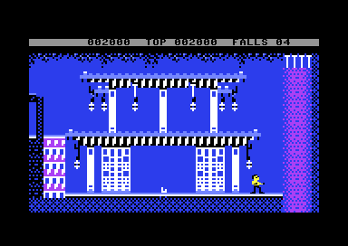
    <h3>Room 6</h3><p>A blue hall with a house built inside it.</p><p>Open from the start to <a href="#room-5">room 5</a>. <span class="later">Opened by lanterns:</span> <a href="#room-0">room 0</a> and <a href="#room-2">room 2</a>.</p><p class="kv">8 lanterns · the Ninja and Yamo</p></figure>
  <figure class="room" id="room-7">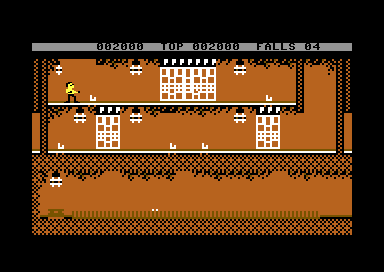
    <h3>Room 7</h3><p>The first of the caves, with a house set into the rock and a swinging object.</p><p>Open from the start to <a href="#room-8">room 8</a>. <span class="later">Opened by lanterns:</span> <a href="#room-0">room 0</a>.</p><p class="kv">13 lanterns · the Ninja and Yamo</p></figure>
  <figure class="room" id="room-8">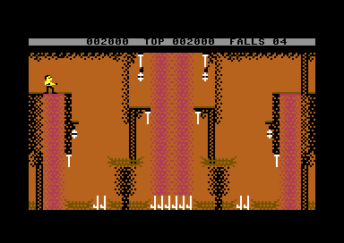
    <h3>Room 8</h3><p>A cave of climbing nets. No enemy comes in here.</p><p>Open from the start to <a href="#room-7">room 7</a> and <a href="#room-9">room 9</a>.</p><p class="kv">4 lanterns · no enemies</p></figure>
  <figure class="room" id="room-9">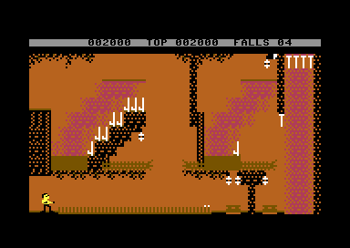
    <h3>Room 9</h3><p>A cave with a staircase cut into it. No enemy comes in here.</p><p>Open from the start to <a href="#room-8">room 8</a>. <span class="later">Opened by lanterns:</span> <a href="#room-6">room 6</a>.</p><p class="kv">5 lanterns · no enemies</p></figure>
  <figure class="room" id="room-10">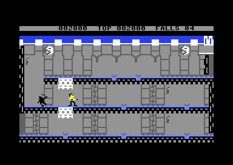
    <h3>Room 10</h3><p>A grey stone hall, the first room beyond the towers.</p><p>Open from the start to <a href="#room-3">room 3</a> and <a href="#room-11">room 11</a>.</p><p class="kv">3 lanterns · the Ninja and Yamo</p></figure>
  <figure class="room" id="room-11">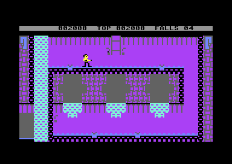
    <h3>Room 11</h3><p>A purple room that leads on to three others. No enemy comes in here.</p><p>Open from the start to <a href="#room-10">room 10</a>, <a href="#room-12">room 12</a>, <a href="#room-14">room 14</a>, and <a href="#room-16">room 16</a>.</p><p class="kv">3 lanterns · no enemies</p></figure>
  <figure class="room" id="room-12">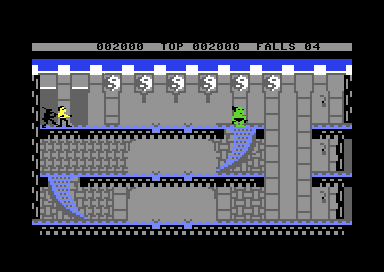
    <h3>Room 12</h3><p>A grey hall with curved slides under its floor.</p><p>Open from the start to <a href="#room-11">room 11</a> and <a href="#room-14">room 14</a>.</p><p class="kv">3 lanterns · the Ninja and Yamo</p></figure>
  <figure class="room" id="room-13">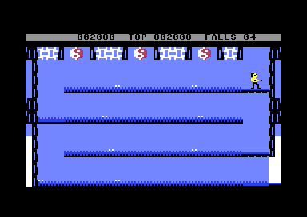
    <h3>Room 13</h3><p>Blue ledges to drop through, 500 points for each of three heights, three times a player. Reached only from room 15.</p><p>Open from the start to <a href="#room-15">room 15</a>.</p><p class="kv">0 lanterns · no enemies</p></figure>
  <figure class="room" id="room-14">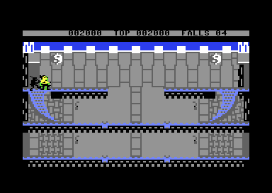
    <h3>Room 14</h3><p>A grey hall with slides, like room 12.</p><p>Open from the start to <a href="#room-11">room 11</a>, <a href="#room-12">room 12</a>, and <a href="#room-16">room 16</a>.</p><p class="kv">4 lanterns · the Ninja and Yamo</p></figure>
  <figure class="room" id="room-15">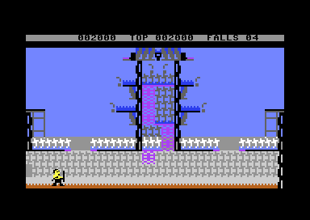
    <h3>Room 15</h3><p>A tower outside the fortress, its door opened by lanterns.</p><p>Open from the start to <a href="#room-13">room 13</a>. <span class="later">Opened by lanterns:</span> <a href="#room-17">room 17</a>.</p><p class="kv">6 lanterns · the Ninja and Yamo</p></figure>
  <figure class="room" id="room-16">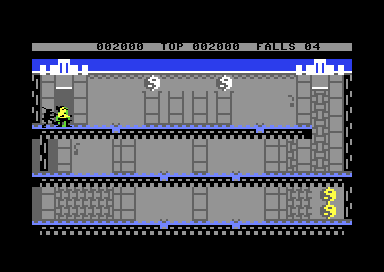
    <h3>Room 16</h3><p>A grey hall with a bonus fall to take.</p><p>Open from the start to <a href="#room-11">room 11</a> and <a href="#room-14">room 14</a>.</p><p class="kv">2 lanterns · the Ninja and Yamo</p></figure>
  <figure class="room" id="room-17">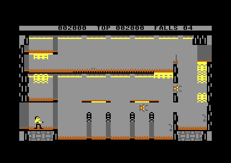
    <h3>Room 17</h3><p>A room of yellow ledges just before the Wizard. No enemy comes in here.</p><p>Open from the start to <a href="#room-15">room 15</a> and <a href="#room-18">room 18</a>.</p><p class="kv">2 lanterns · no enemies</p></figure>
  <figure class="room" id="room-18">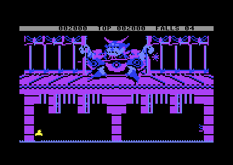
    <h3>Room 18</h3><p>The Wizard’s chamber. His eyes follow Bruce, and his fireballs kill on contact.</p><p>Open from the start to <a href="#room-17">room 17</a>. <span class="later">Opened by lanterns:</span> <a href="#room-19">room 19</a>.</p><p class="kv">1 lantern · no enemies</p></figure>
  <figure class="room" id="room-19">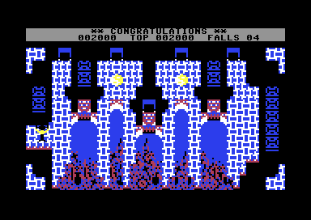
    <h3>Room 19</h3><p>The treasure room: “CONGRATULATIONS”, then back to the garden for the second loop.</p><p>Leads back to <a href="#room-0">room 0</a> after the timer.</p><p class="kv">0 lanterns · no enemies</p></figure>
  </div>
</section>
</main>
<footer style="margin:16px 0 0;padding:22px var(--gx) 0;border-top:1px solid #e0ded8;font-family:'IBM Plex Mono',ui-monospace,Menlo,monospace;font-size:12px;color:#80838a"><a href="https://github.com/gamesexplained/gamesexplained" aria-label="GitHub" style="display:inline-flex;align-items:center;justify-content:center;width:26px;height:26px;margin-left:8px;border:1px solid #e0ded8;border-radius:7px;background:#ffffff;color:#80838a;vertical-align:middle"><svg width="15" height="15" viewBox="0 0 24 24" fill="currentColor" aria-hidden="true"><path d="M12 .297c-6.63 0-12 5.373-12 12 0 5.303 3.438 9.8 8.205 11.385.6.113.82-.258.82-.577 0-.285-.01-1.04-.015-2.04-3.338.724-4.042-1.61-4.042-1.61C4.422 18.07 3.633 17.7 3.633 17.7c-1.087-.744.084-.729.084-.729 1.205.084 1.838 1.236 1.838 1.236 1.07 1.835 2.809 1.305 3.495.998.108-.776.417-1.305.76-1.605-2.665-.3-5.466-1.332-5.466-5.93 0-1.31.465-2.38 1.235-3.22-.135-.303-.54-1.523.105-3.176 0 0 1.005-.322 3.3 1.23.96-.267 1.98-.399 3-.405 1.02.006 2.04.138 3 .405 2.28-1.552 3.285-1.23 3.285-1.23.645 1.653.24 2.873.12 3.176.765.84 1.23 1.91 1.23 3.22 0 4.61-2.805 5.625-5.475 5.92.42.36.81 1.096.81 2.22 0 1.606-.015 2.896-.015 3.286 0 .315.21.69.825.57C20.565 22.092 24 17.592 24 12.297c0-6.627-5.373-12-12-12"/></svg></a><a href="https://discord.gg/3V9GWyRDWV" aria-label="Discord" style="display:inline-flex;align-items:center;justify-content:center;width:26px;height:26px;margin-left:8px;border:1px solid #e0ded8;border-radius:7px;background:#ffffff;color:#80838a;vertical-align:middle"><svg width="15" height="15" viewBox="0 0 24 24" fill="currentColor" aria-hidden="true"><path d="M20.317 4.3698a19.7913 19.7913 0 00-4.8851-1.5152.0741.0741 0 00-.0785.0371c-.211.3753-.4447.8648-.6083 1.2495-1.8447-.2762-3.68-.2762-5.4868 0-.1636-.3933-.4058-.8742-.6177-1.2495a.077.077 0 00-.0785-.037 19.7363 19.7363 0 00-4.8852 1.515.0699.0699 0 00-.0321.0277C.5334 9.0458-.319 13.5799.0992 18.0578a.0824.0824 0 00.0312.0561c2.0528 1.5076 4.0413 2.4228 5.9929 3.0294a.0777.0777 0 00.0842-.0276c.4616-.6304.8731-1.2952 1.226-1.9942a.076.076 0 00-.0416-.1057c-.6528-.2476-1.2743-.5495-1.8722-.8923a.077.077 0 01-.0076-.1277c.1258-.0943.2517-.1923.3718-.2914a.0743.0743 0 01.0776-.0105c3.9278 1.7933 8.18 1.7933 12.0614 0a.0739.0739 0 01.0785.0095c.1202.099.246.1981.3728.2924a.077.077 0 01-.0066.1276 12.2986 12.2986 0 01-1.873.8914.0766.0766 0 00-.0407.1067c.3604.698.7719 1.3628 1.225 1.9932a.076.076 0 00.0842.0286c1.961-.6067 3.9495-1.5219 6.0023-3.0294a.077.077 0 00.0313-.0552c.5004-5.177-.8382-9.6739-3.5485-13.6604a.061.061 0 00-.0312-.0286zM8.02 15.3312c-1.1825 0-2.1569-1.0857-2.1569-2.419 0-1.3332.9555-2.4189 2.157-2.4189 1.2108 0 2.1757 1.0952 2.1568 2.419 0 1.3332-.9555 2.4189-2.1569 2.4189zm7.9748 0c-1.1825 0-2.1569-1.0857-2.1569-2.419 0-1.3332.9554-2.4189 2.1569-2.4189 1.2108 0 2.1757 1.0952 2.1568 2.419 0 1.3332-.946 2.4189-2.1568 2.4189Z"/></svg></a><br>© Games Explained contributors. Write-ups, facts and symbol maps are available under <a href="https://creativecommons.org/licenses/by-sa/4.0/" style="color:#1f5fa8;text-decoration:none">CC BY-SA 4.0</a>; code under <a href="https://opensource.org/licenses/MIT" style="color:#1f5fa8;text-decoration:none">MIT</a></footer>
